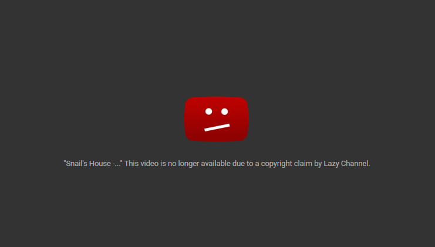

Persondataloven omhandler hvornår og hvordan man må behandle personlige oplysninger.
Denne lov gælder for private virksomheder, foreninger og organisationer samt offentlige myndigheder. Der er dog en undtagelse, når behandlingerne bliver fortaget af Politiets og Forsvarets Efterretningstjenester.
Man kan dele persondataloven ind i en række konkrete punkter, som kan uddybe hvad loven helt grundlæggende indeholder:
– Det kan være alt fra navn, CPR-nummer, til udseende, fingeraftryk, helbredsoplysninger og adfærd.
– Dette kan være politisk eller religiøs overbevisning, seksualitet, interesser og lign. informationer.
– Hvorvidt opfører man sig offentligt; hvad er personens sociale status; både i forhold til familie og karriere. Har personen haft en kriminel baggrund?
– Bankkonti og transaktioner; har vedkommende gæld? Besidder personen en formue?
– I forhold til krænkelser i barndommen, adoption, krigstrauma og lign.
– Personens IP-adresse i forhold til PC eller smartphones, browserhistorik, Emailadresser, telefonnummer, fysiske adresse, GPS-koordinator.
Behandlingen af disse overstående informationer/personlige data, er som udgangspunkt forbudt ifølge Persondataforordningen (GDPR).
Der er dog visse klare undtagelser;
GDPR står for General Data Protection Regulation og er en lovgivning, som omhandler netop behandling samt beskyttelse af personlige data. Lovgivningen er indført af EU. GDPR er som udgangspunkt en lovgivning som alle virksomheder skal overholde – man har i EU besluttet, at en virksomhed foruden dokumentation på at efterleve GDPR-lovgivningens regler, kan risikere bøder på op til 20 millioner euro – herudover kan den ansvarlige for virksomheden også risikere fængselsstraf.
Immaterielle rettigheder
At have en immateriel ret, er en betegnelse for retsbeskyttelsen af eksempelvis:
Der findes forskellige love for de forskellige ’frembringelser’ som er under beskyttelse. Disse love kaldes: Ophavsretsloven, patentloven, brugsmodelloven, designloven og varemærkeloven. Ideen bag disse love, er bla. at beskytte produktet imod kopiering eller misbrug fra konkurrenter.
Ophavsret
Ophavsretten er et skjold mod tyveri af digitale samt fysiske medier.
Man kan få ophavsret hvis man udfylder de krav, der er om originalitet for værket. Dette er hvad man typisk mener, når man snakker om copyright.
Et godt eksempel på dette er i forhold til musik. Skaber man et stykke musik – foruden en masse samples fra andres musik, har man Ophavsret på sit musikstykke. Dette kunne selvfølgelig også være i form af et billede, design eller andet kreativitet.
Når vi som MMD’ere designer nye logoer, hjemmesider, billeder eller lign. skal vi være forsigtige med vores inspiration - hvis vores værk kan forveksles med en kopi af et andet allerede eksisterende værk, mister vi ophavsretten og dermed muligheden for at sælge eller på anden vis benytte os af produktet i forretningsmæssig sammenhæng. Det samme gælder brug af musik på hjemmesider, eller i videoer. Hvis vi ikke har tilladelse af Ophavshaveren, kan videoen blive fjernet. Hvis den er brugt i økonomisk sammenhæng, kan Ophavshaveren kræve det, vi har fået ud produktet; på trods af, at fokuset ikke var på baggrundsmusikken – dette er kaldt et ”Copyright-claim”.
Dette ses ofte på sociale medier som Youtube – hvor utallige brugere, har fået taget deres ’løn’ (I form af Youtube Partner-ship) for deres videoer; på trods af at sangen måske blot er blevet spillet i få sekunder; eller på anden vis blevet sunget i baggrunden. I værste tilfælde er få sætninger blevet forvekslet med sangtekst – og dermed blevet ’Claimed’.
Det er derfor vigtigt at være original i form af kreativitet; eller på anden vis få tilladelse af Ophavshaveren, før man gør brug af vedkommes produkt. Heldigvis er der mange musikere som ønsker, at andre gør brug af deres musik, for at fremme deres egen popularitet.
En måde at beskytte sine produktioner på er via et varemærke.
Varemærker ses typisk i bunden af en hjemmeside, eller ud fra titlen på et produkt eller anden vare. ” © ” bliver brugt i forhold til copyright – for at vise at produktet er under beskyttelse af Ophavsretten.
Typisk andre sete varemærker er: ™ og ® - Disse er typisk brugt i form af Import/export af varer. I bund og grund betyder de det samme; men reguleringen varierer meget fra land til land. I visse lande kan det være obligatorisk at benytte sig af ”®” – det kan så resultere i tab af sine rettigheder, hvis man benytter sig af et andet mærke i stedet.

Kilder: https://www.retsinformation.dk/ , https://www.datatilsynet.dk/ , https://gdpr.dk/